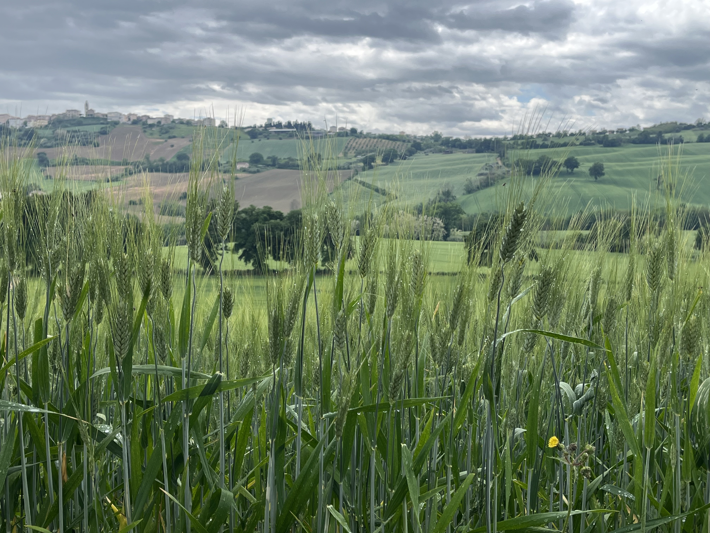
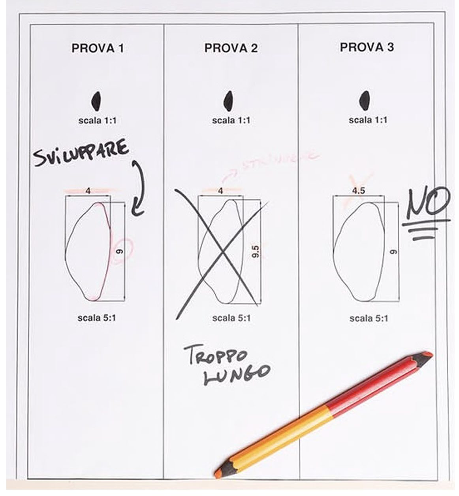
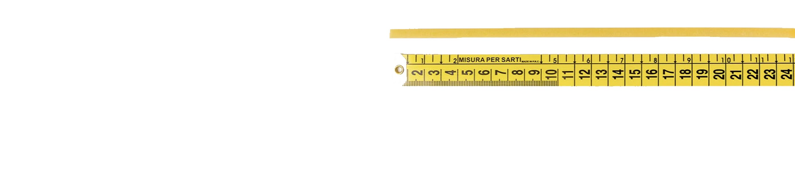
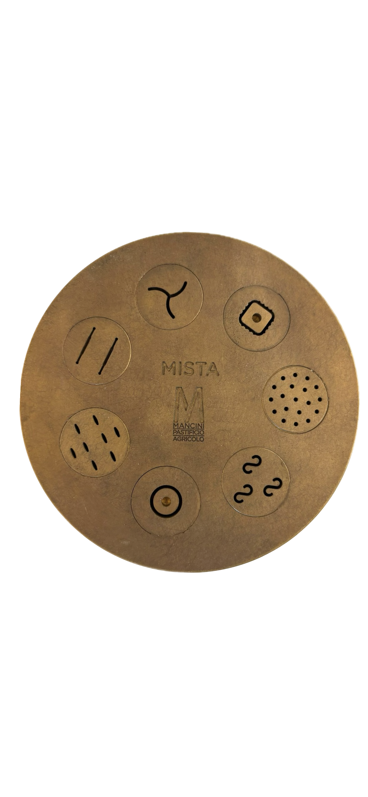

Ispirarsi a un’eccellenza artigianale
per elevare i nostri standard di qualità.
Compte Rendu — Pastificio Mancini
La sua
La sua
Filosofia
Nasce nel 2010 nelle Marche per iniziativa di Massimo Mancini
Filiera verticale, dalla semola alla pasta.
Ogni formato segue 50 parametri produttivi, che si adattano in base alla qualità della raccolta.
Materia prima variabile — grano diverso ogni stagione.
Conoscenze empiriche e scientifiche tradotte in parametri oggettivi scritti in un Manuale Qualità.
Filiera del grano — dal campo alla pasta

Compte Rendu — Pastificio Mancini
Controlli Qualità
Sicurezza Alimentare
Test Laboratori esterni
Analisi dei rischi sulla qualità della materia prima
Controlli Produzione
Check-list pre operativa
Controlli continuativi su ogni lotto di produzione
Operatore + macchinario


Compte Rendu — Pastificio Mancini
Non Conformità
5 Perché
Risposta con dati scientifici
Bassa complessità
Causa singola e identificabile
1
Perché?
2
Perché?
3
Perché?
4
Perché?
5
Perché?
Causa radice
Ishikawa
Elevata complessità
Problemi multifattoriali
Panorama delle possibili cause
Investigazione approfondita
Esempio — Filato che stinge
Nuovo Standard Aziendale
Root Cause Analysis
Compte Rendu — Pastificio Mancini
Cosa ci Accomuna
Pastificio Mancini
Chanel
01
Materia prima biologica e variabile — grano diverso ogni stagione
Materia prima variabile — fibra, filati, tessuti diversi ogni collezione
02
Savoir-faire del mastro pastaio tradotto in procedure
Know-how dei maglifici e dei tecnici Chanel formalizzato in procedure condivise
03
"Ricetta" di 50 parametri per ogni formato, adattata alla qualità del grano
Dettagli tecnici per modello — TDM, test LABO, TAP, PRSL, nomenclature
04
Analisi dei rischi + Root Cause Analysis strutturate e documentate
Analisi dei rischi con i fabbricanti + verifica standard (composizioni, TDS, test REACH)
05
Checklist e processi pre-operativi prima di ogni produzione
Procedure e standard condivisi — Test LABO, test REACH…
Filiera del grano
Creazione del capo
Compte Rendu — Pastificio Mancini
Implementazione Interna
Prossimi step
01
Manuale Qualità / Cahier de charge Qualité
Procedure di controllo durante il processo produttivo — dalla materia prima al capo finito — e i parametri da rispettare.
02
Golden Rules
Definire e condividere le regole qualitative non negoziabili con i partner produttivi.
03
Root Cause Analysis
Strutturare un template interno per le non conformità, ispirato alla Root Cause Analysis di Mancini.
04
Processi Pre-operativi
Introdurre checklist operative standardizzate prima di ogni sessione di valutazione del prodotto, come processo sistematico del team.
Compte Rendu — Pastificio Mancini
Tracciabilità
QR code su ogni pacco — Tracciabilità lotto · Materie usate · ScadenzaMancini — Filiera produttiva
Trebbiatura del grano
Trebbiatura del grano
grano
Molitura
Molitura

Trafila in bronzo
bronzo
Confezionamento
Confezionamento
Chanel — Processo produttivo
Allevamento / coltivazione fibra
Allevamento fibra
fibra
Fasi di filatura
Fasi di filatura
filatura
Controlli qualità superati
Controlli qualità
qualità
Creazione del capo
Creazione del capo
del capo